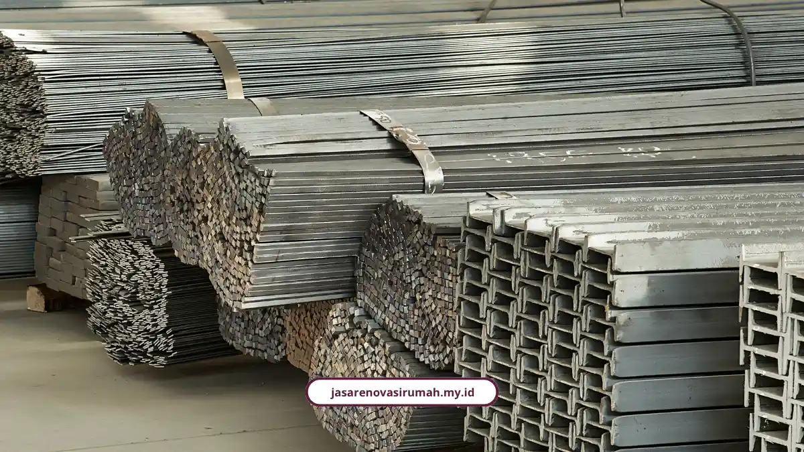
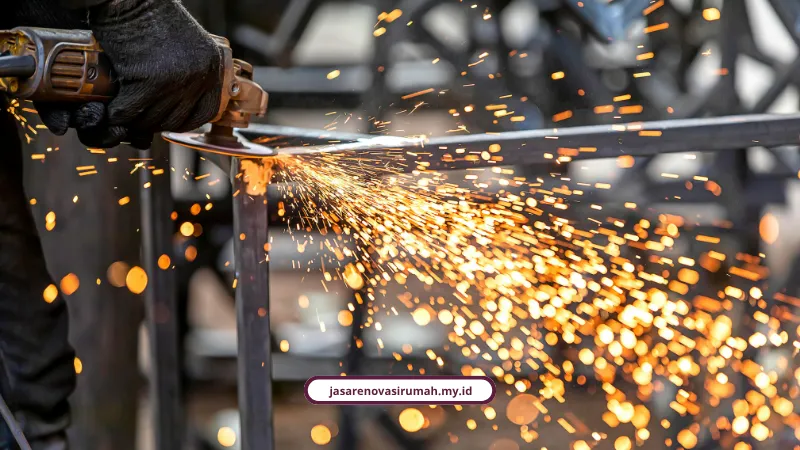

Jasa kontraktor gudang kami membangun gudang baja berat berstandar SNI, hingga 50% lebih cepat dari beton. Melayani Surabaya, harga terpasang Rp22.000 hingga Rp30.000 per kg.
Di bawah ini ada standar SNI yang wajib dipakai, hasil riset bracing tahan gempa, dan studi kasus Kenjeran yang menghemat anggaran lebih dari Rp133 juta.
Mengapa Gudang Industri Memakai Baja Berat WF?
Gudang bentang lebar berbeban berat membutuhkan baja berat hot-rolled seperti profil WF. Baja ringan cold-formed hanya ideal untuk rangka atap atau beban rendah.
Baja berat memberi bentang lebar tanpa banyak kolom tengah, sehingga forklift dan kendaraan operasional bebas bermanuver. Material ini juga tahan lama hingga puluhan tahun.
Dibandingkan beton bertulang, baja berat unggul pada tiga hal:
- Kecepatan: sistem pabrikasi komponen (pre-engineered building) hingga 50% lebih cepat, sedangkan beton butuh curing minimal 28 hari.
- Ekspansi: gudang mudah diperluas saat usaha berkembang.
- Nilai investasi: resale value tinggi, sementara beton menjadi puing saat dibongkar.
Kekurangannya jujur saja: baja berat menuntut perhitungan struktur, pengelasan, dan perlindungan karat yang disiplin. Di sinilah tim insinyur kami bekerja.
Berapa Biaya Membangun Gudang Baja di Surabaya?
Konstruksi baja borongan di Surabaya rata-rata Rp22.000 hingga Rp30.000 per kg terpasang. Paket gudang rangka baja standar industri berkisar Rp2.500.000 hingga Rp3.800.000 per m², atau sekitar Rp2,8 juta per m².
Paket gudang per m² mencakup tiga komponen:
- Struktur baja WF.
- Atap Zincalume.
- Lantai beton K-225.
Gudang skala 200 m² umumnya memerlukan 3 hingga 5 minggu dari fabrikasi sampai ereksi. Kisaran harga bersifat umum, sehingga RAB final kami susun setelah uji tanah dan desain struktur selesai.
Bisakah Durasi dan Biaya Proyek Gudang Dipangkas?
Bisa, lewat penjadwalan yang dioptimalkan. Studi kasus gudang baja di Kenjeran, Surabaya, memangkas durasi kerja dari 147/148 hari menjadi 117 hari dengan metode MS Project.
- Durasi: 147/148 hari menjadi 117 hari.
- Biaya: Rp709.872.500 menjadi Rp576.713.952.
- Penghematan: Rp133.158.548.
Studi itu ditulis tim riset manajemen konstruksi UWIKA: Wilson Suryawan, M. Shofwan Donny Cahyono, Yoanita Eka Rahayu, dan Norman Ray. Mereka menekankan perencanaan hubungan antar-aktivitas kerja dan manajemen resources yang tepat.
Angka studi Kenjeran adalah hasil riset akademis, bukan klaim hasil proyek kami. Prinsipnya tetap sama dengan yang kami terapkan: jadwal rapi dan anggaran terkendali.
Standar SNI Apa yang Wajib untuk Gudang Baja?
Gudang baja wajib mengacu pada SNI 1729:2020, SNI 1726, dan SNI 8493:2019. Tiga standar ini mengatur desain baja struktural, ketahanan gempa, dan profil baja.
- SNI 1729:2020: spesifikasi bangunan gedung baja struktural.
- SNI 1726: tata cara perencanaan ketahanan gempa.
- SNI 8493:2019: spesifikasi profil baja struktural.
Profil WF dan sambungan kritis
Profil WF (Wide Flange) memakai baja hot-rolled simetris. Bagian web menahan gaya tekan vertikal, sedangkan flange menahan gaya lentur horizontal.
Dimensi umum SNI bervariasi dari WF 150x75 mm (14 kg/m) hingga WF 700x300 mm (185 kg/m).
Sambungan kritis antara kolom dan balok (rafter) wajib memakai High Tension Bolt (HTB). Pengelasannya full penetration sesuai standar AWS (American Welding Society).

Apakah Gudang Baja Aman terhadap Gempa di Surabaya?
Struktur gudang baja menjadi jauh lebih kaku bila dilengkapi bracing silang antar kolom. Temuan itu berasal dari riset Teknik Sipil UNESA pada pemodelan zona gempa 3 Surabaya.
Tim penelitinya: Berkat Cipta Zega, Feriza Nadiar, Puguh Novi Prasetyono, dan Arik Triarso. Pemasangan bracing silang menghasilkan penurunan berikut:
- Gaya aksial turun 20,57%.
- Gaya geser turun 1,53%.
- Momen turun 1,11%.
- Simpangan (displacement) turun 0,46%.
Jujur saja, sebagian angkanya tampak kecil. Namun penurunan gaya aksial 20,57% sudah cukup menjadi alasan memasang bracing, apalagi dirancang berbasis SNI 1729:2020.
Bagaimana Gudang Baja Menghadapi Tanah Lunak dan Karat Pesisir?
Tanah lunak ditangani lewat uji tanah (soil test atau sondir) lebih dulu, lalu pondasi footplat atau bored pile. Karat pesisir ditangani lewat pelapisan khusus.
Wilayah seperti Kenjeran dan Kalimas memiliki karakter tanah cenderung lunak. Dekat pantai, salinitas udara laut mempercepat korosi pada baja.
Pelapisan pelindung yang dipakai untuk baja berat:
- Cat anti-karat Zinc Chromate.
- Epoxy.
- Hot-Dip Galvanized.
Siapa yang Kami Layani untuk Proyek Gudang?
Melayani Surabaya, Gresik, dan Sidoarjo, kami menangani tiga kelompok kebutuhan, dari kawasan Margomulyo, SIER, sampai Rungkut:
- Pemilik bisnis manufaktur, distribusi, dan logistik yang butuh bentang lebar tanpa banyak kolom tengah dan khawatir proyek mangkrak atau overbudget.
- Investor dan developer gudang sewa yang mengejar kecepatan bangun agar gudang segera disewakan dan perizinan PBG/SLF tidak terhambat.
- Manajer operasional dan konsultan teknik yang menuntut kepastian mutu baja WF SNI, sistem las, uji sondir, dan perhitungan struktur tahan gempa.
Apa Keunggulan Layanan Kontraktor Kami?
Kami berpengalaman lebih dari 12 tahun, menangani lebih dari 150 proyek, dengan tingkat kepuasan klien 98%. Tim kami berisi lebih dari 25 profesional, dari arsitek sampai tenaga ahli lapangan.
- RAB transparan tanpa biaya tersembunyi.
- Pengerjaan presisi sesuai timeline.
- Garansi resmi pekerjaan.
- Perizinan PBG/SLF dan konsultasi struktur.
- Konsultasi gratis.
Pendekatan konsultatif dan keterbukaan komunikasi yang dirasakan klien rumah tinggal kami terapkan konsisten pada proyek pabrik dan gudang baja berat. Dua klien berikut menceritakan pengalamannya:
- Ibu Sinta, Surabaya: "Tim arsitek memberi banyak masukan desain yang membuat rumah kami terasa jauh lebih luas dan nyaman."
- Bapak Andi, Malang: "Proses renovasi rumah kami berjalan sangat rapi, komunikasi tim selalu jelas dan hasil akhirnya melebihi ekspektasi."
Pemilik usaha yang ingin hunian ikut dibenahi juga bisa memakai tim yang sama untuk interior rumah mewah dan apartemen minimalis.
Kesimpulan: Baja Berat WF, Uji Tanah, dan RAB yang Jujur
Gudang industri bentang lebar berbeban berat paling pas memakai baja berat WF berstandar SNI, lengkap dengan bracing, uji tanah, dan perlindungan karat. Biaya terpasang berkisar Rp22.000 hingga Rp30.000 per kg.
Siap membangun? Hubungi WhatsApp 0889-8964-3555 untuk konsultasi gratis, atau kirim email ke info@jasarenovasirumah.my.id. Pesan jasa kontraktor gudang kami sekarang lewat halaman layanan.
FAQ Seputar Jasa Kontraktor Gudang Surabaya
Naura Regyna Putri
Penulis Profesional & Praktisi Konstruksi
Naura Regyna Putri adalah seorang penulis profesional yang memiliki ketertarikan mendalam pada dunia arsitektur dan konstruksi. Dengan pengalaman bertahun-tahun mengamati tren renovasi rumah, ia aktif membagikan panduan praktis, tips RAB, dan wawasan seputar material bangunan untuk membantu pemilik rumah mewujudkan hunian impian mereka dengan anggaran yang efisien.